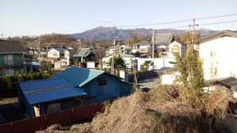
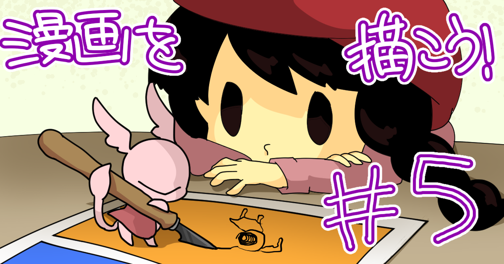

News
-
望月 宥冶 wrote a new post, 多重化引継ぎ-後半-, on the site 望月宥冶の研究日誌 3年 3か月前
こんにちは。望月 宥冶です。
前半に引き続き，[…] -
Rex HSIEH wrote a new post, 2 Weeks in Japan, on the site Rex's Japan Adventure 3年 3か月前
今日まで日本で二週間に住んでいました。これ二週間中にたくさん物事がやりました。これまでに院生と四年生の研究発表を聞いたり、ロータリー米山奨学金の面接特訓をしたり、アパートの家具と必要な物を買ったり、人口知能を予習したり、しました。そしてSIGGRAPHを提出するためにラボメイトと英語と日本語を話したり、英語の論文を直したり、しました。今日本語を上手になるように、毎日練習しています。
As of Monday, Febr […] 
-
望月 宥冶 wrote a new post, 多重化引き継ぎ-前半-, on the site 望月宥冶の研究日誌 3年 3か月前
こんにちは。望月 宥冶です。
今回は学部4年生[…] -
-
望月 宥冶 wrote a new post, 論文投稿をして…, on the site Real Baby – Real Family 3年 3か月前
こんにちは。望月です。
本日は、決勝大会後から取り組んでいた論文執筆について報告も兼ねて書いていきます。
論文を書く目的として、以下のようなことを考えながら取り組みました。1年かけて学んできた技術をまとめる
プロジェクトの今後を整理する
3年生のうちから技術文章の書き方について学ぶ実際に書こうとしてみると、どう書き出していいかわからず、
IVRCの企画書を読み返したり、別の論文を見てみ[…] -
浅野 隆弥 wrote a new post, Hello World!, on the site IQが1あがった 3年 3か月前
こんにちは、正式に白井研に配属されました浅野隆弥です。
セミナーやベイビーチームに何回か登場しているのですが、改めてどんなことができるのか自己紹介したいと思います。
できること
Untiyの基本的なこと
C,C++,Javaの基本的なこと
できるけどできればやりたくないこと
Arduino
センサープログラミング
できないけどやりたいこと
モデリング
絵を描く
Raspberry Pi
Unityを[…] -
-
Rex HSIEH wrote a new post, Back in Japan, on the site Rex's Japan Adventure 3年 4か月前
What’a happening everyone, I am back! In JAPAN also! After graduating from masters some 2 years ago and finding work/working for a bit more than 1 year, I have decided to pursue a PhD in Information Technology a […]
-
agaz wrote a new post, 白井研究室こんにちは, on the site 我妻の白井研いそうろう日記 3年 4か月前
神奈川工科大学創造工学部ロボット・メカトロニクス学科所属の白井研究室いそうろうの我妻です。
これから本格的ないそうろうとして、白井研究室で感じたこと、思ったことなど、記事にまとめていけたらと思います。
どうぞよろしくお願いいたします。 -
東田 茉莉花 wrote a new post, #9-セミナーまとめ（東田 茉莉花）, on the site 白井研セミナー 3年 4か月前
こんにちは東田です。
今回はセミナーの最終課題ということで、今まで書いたブログを振り返りつつ、セミナーを受ける前の自分と、後の自分を比較します。
各記事アイキャッチ画像をクリックで実際の記事へジャンプ！
#1-自己紹介
「気に入らない検索結果があるなら自分の記事で上書きしちゃえばいいじゃない」という格言（？？？）が心に沁みました。
この精神めっちゃ大事だなと今でも思っています。多分これからも思っているのじゃ[…]

-
kobayu wrote a new post, 後期セミナーブログ まとめ (小林 裕哉), on the site 白井研セミナー 3年 4か月前
こんにちは小林です。
今回のブログは今までのまとめとなります。
まず記念すべき第1回目のブログが
「2016年度後期セミナーブログ エゴサーチをしてみよう」
です。さて、もう一度エゴサーチをしたらどういった結果になるのでしょうか？
結果はあまり変わってませんでした。原因は発信することが少なかったからでしょう
受け身ではなく自分で進んでいくことが大切だと改めて感じました。
さらにはカレンダー制作プロジェクトで[…]

-
aoia wrote a new post, 2016年度後期セミナーブログ第9回セミナーまとめ／有賀安央衣, on the site 白井研セミナー 3年 4か月前
第1回ブログを読み返して，このセミナーを取る前の私は，自分に軸がないことをすごく情けなく感じていたんだと思い出しました．自分が何をやりたいのか全く定まっておらず，きちんと自己紹介もできませんでした．
2016年度後期セミナーブログ第1回／有賀安央衣
第1回ブログではエゴサーチもやりました．小中学生の頃の水泳の記録と高校から続けいている弓道の記録が出てきたのは驚きました．知らず知らずのうちに名前は広がるものなんだと知りました[…]

-
natsuaki wrote a new post, 2016年度後期セミナーブログ 馬場夏昭 第10回 (まとめ）, on the site 白井研セミナー 3年 4か月前
皆さんおはようございます。今回でこのセミナーブログも最後になると思います。ここではこの半年間のまとめを行いたいと思います。
第1回自己紹介&エゴサーチ
第1回では、自己紹介とエゴサーチを行いました。この時はエゴサーチしても全然自分の事が検索結果に引っかかっていませんでしたが、今では検索するとこの半年間の活動が載るようになりました。これは大きな進歩ですね。（少し恥ずかしいですが）
第2回名刺作り
第2回では、セ[…]

-
渡邉 翔 wrote a new post, 2016年度セミナーブログまとめ (渡邉翔), on the site 白井研セミナー 3年 4か月前
こんにちは、渡邉です
いつの間にかセミナーが終わりを迎えていて驚きです。
セミナーでは遅刻欠席は無かったはずですが、ブログを全然書けませんでした。
なぜだろうか考えてみました。
結論から書くと、「油断」かなと思います。
いつでも書けると考えている油断、書かなくてもやったことは何となく覚えているという油断、先生の話をちょいちょいメモしてたし大丈夫だろうという油断
そういった要素が足を引っ張っていたのではな[…]
-
natsuaki wrote a new post, 2017カレンダープロジェクト, on the site 白井研セミナー 3年 4か月前
研究室の2017年カレンダーを作成するために、必要な事をまとめてあります。
主に
写真の集め方
予算について
行程について
以上の三つをまとめてあります。
まず写真の集め方についてです。
DropBoxを利用する事にしました。【白井研究室2017カレンダー用写真box】というチームを作ったので、そこに研究室の先輩方から画像を提供していただく所存です。
予算の方は、何部刷るのか未定ですが、目安として5[…]
-
東田 茉莉花 wrote a new post, #5-漫画を描こう！（東田茉莉花）, on the site 白井研セミナー 3年 4か月前
こんにちは東田です！最近いろんなものを無くしています！てへっ。
先週のセミナーでは、皆で漫画を描きました。A4用紙を縦に半分横に何回か折り、その中に描いていきます。通常の四コママンガ原稿よりも枠が大きめですね。
どうでもいい余談ですが、普通B5サイズの本を作る時はA4サイズの用紙（同人用紙）を買います。A4サイズの本にはB4サイズの用紙（プロ用紙）を買います。
トンボを入れる都合上、完成サイズから一回り大きい用紙のものを[…] 
-
otaka wrote a new post, 2016年後期セミナー10回 1423148大塚高弘の最終レポート, on the site 白井研セミナー 3年 4か月前
大塚高弘です。
最終レポートを書きます。・学ぶ前の私
白井研究室はとても忙しく厳しい研究室で、同時に優れた卒業生を排出している研究室だと思っていました。
先輩からの様々な噂も聞いており、噂通りの研究室なのか噂とは違い優れた研究室なのか、
是非この身でセミナーを体験してみて、入るべき研究室なのかを確かめたいたいと考えていました。・セミナーの振り返り
2016年後期セミナー1回 1423148大塚高弘の自己紹介[…]
-
東田 茉莉花 wrote a new post, #7-結論と三本柱（東田茉莉花）, on the site 白井研セミナー 3年 4か月前
こんにちは、東田です。おいしくてあったかい中華が食べたいです。
さて、今日のセミナーでは
みんなでクリスマスの飾り付けを行いました。楽しかったです。
―終―
…嘘ですよ？
ドアを開けた瞬間、LEDを吊り下げようとしていたセミナー生が目の前にいてどうしようかと思いました。
早いものでもう１２月ですね。今週の金曜で卒研配属の第一志望が締め切りです。いやはや…。
……[…]
-
kobayu wrote a new post, 2016後期セミナー ブログ第5回 "研究とは何か？", on the site 白井研セミナー 3年 4か月前
どうも、小林です。
今回は”研究”について自分の考えを書いていこうと思います
まず、大辞林によると
［名］(スル)物事を詳しく調べたり、深く考えたりして、事実や真理などを明らかにすること。また、その内容。
と記載されている。
ではここで、私の意見を述べてみる。
まず、研究とは疑問を探すことである
研究をするときに○○をする研究がしたい、××ということについて研究したい
と考える人がいるが、これらはすべて一つの疑[…]
-
東田 茉莉花 wrote a new post, #6-ポートフォリオを作ろう！（東田茉莉花）, on the site 白井研セミナー 3年 4か月前
こんにちは東田です。冬の寒さに耐えられる予感がしません。
今日は勤労感謝の日でしたが、色々有りまして研究室なうです。本日は26日に開催されるアカリクITイベントや、12/3に開催されるHEAT渋谷に
持っていく用のポートフォリオの制作を行っていました。ポートフォリオは紙とWebが主流ですが、私はどちらも作っています。
アートに携わる人は紙、デザインに携わる人はWebのことが多いように感じます。勿論例外はたくさん[…]

- もっと読み込む